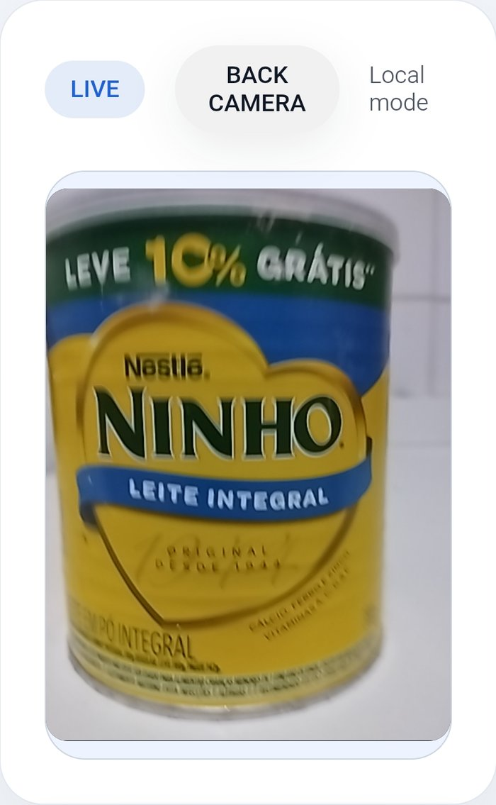
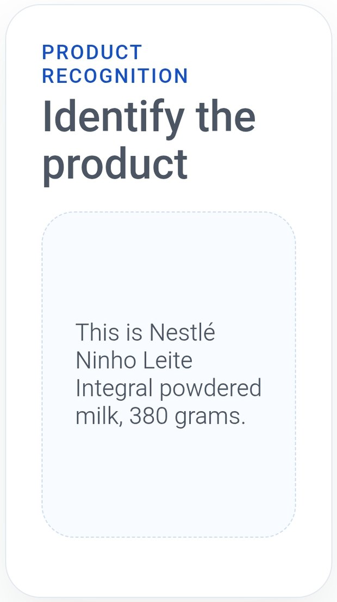

★ #1 Best Project · voted by participants1º Melhor Projeto · voto dos participantes
One of 3 PMs on an AI MVP shipped live at Demo DayUm dos 3 PMs de um MVP de IA lançado no Demo Day
11-week MVP sprint, PM Accelerator AI PM Bootcamp (Cohort 9), April–August 2026.Sprint de MVP de 11 semanas, PM Accelerator AI PM Bootcamp (Cohort 9), abril–agosto de 2026.
- Co-led user research with 33 visually impaired shoppersCo-liderei a pesquisa com 33 compradores com deficiência visual
- Defined 5 personas and 2 beachhead segments to focus scopeDefini 5 personas e 2 segmentos de entrada para focar o escopo
- Set the North Star metric and AI quality targetsDefini a North Star Metric e as metas de qualidade da IA
- Prioritized a “refuse rather than guess” guardrail for money answersPriorizei o guardrail “recusar em vez de adivinhar” em respostas sobre dinheiro
33shoppers in user researchcompradores na pesquisa
5 → 2personas → beachhead segmentspersonas → segmentos de entrada
15people, cross-functional teampessoas, time multidisciplinar
11 wkfrom kickoff to live MVPdo início ao MVP no ar